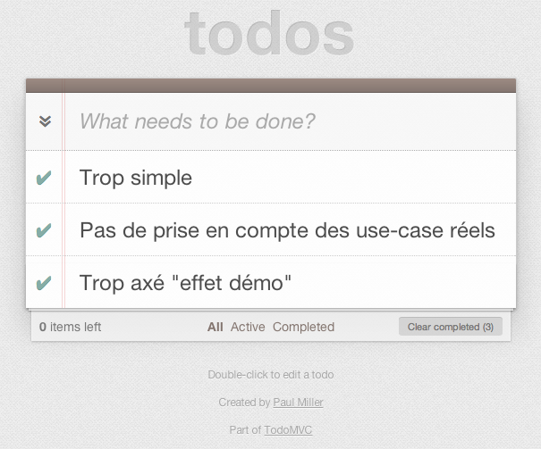

Architecture et bonnes pratiques en webapp
Retours d'expériences
Wizad / MAD's Graphics

William Pottier
- @wizad
- developer@william-pottier.fr
- Ancien étudiant de l’Université de Caen
MAD
- Dev UI
- JavaScript Ninja
William Pottier
- Dev back
- Symfoniste
High-Scalability
High-traffic
Rich Client Interfaces
Modularity
Real-time interactions
WEBAPP
Web vs App ?
TodoMVC : le mauvais élève
Real-life projects
Site Communautaire
- Chaplin.js
- Brunch.io
☛ Delicious.com / Moviepilot…
App In-Browser
- Marionette.js
- Grunt
☛ Airbrake.io / RavenHQ…
Backbone
socle backend stable
Pourquoi Backbone.js ?
- agnostic
- léger
- faible couple de dépendances
- adapté à la mobilité
Pourquoi pas seul ?
- trop de choses à réécrire
- pas de cadre
- limité à la sync back / events
Architecture globale
Zoom : Layouts & UI
Layout
Chaplin
- Abstraction de DOM Document dans un Objet Layout
- Liaison directe depuis les contrôleur
- Catch App-wide events
Marionette
Views
Chaplin
- Convention over configuration pour le rendering
- Memory-safe binding
- Supporte Regions & Subviews
Marionette
Collection Views
Chaplin
- Filtering
- Throbblers
- Cache
- Fallback content
Marionette
Zoom: #g11n
Librairies
- Pomo
- Jed
- WebL10n
Zoom: Modularité
Require.js
Pattern AMD vs CommonJS
Modules
Chaplin
- Mediator : Comunication entre modules via Pub/Sub pattern
- Abstraction des instanciations de contrôleurs dans un Dispatcher
Marionette
Zoom: Authentification et Session
Sécurité
Droits et rôles
CSRF
- prévenir les attaques
- identifier les clients
- double token jetable
Auth intégrée à la Webapp ?
Zoom : Websocket? Webservices?
Communication temps-réel
- socket.io
- rafraichissement des vues via des events custom (push)
- node.js pour une communication asynchrone vers l’API
Utilisation des services
couche RESTful + JSON
Zoom: Stratégie de cache
Côté Node.js
- persistence memcache partagée
- cluster de workers node.js
- rafraichissement async des réponses API
Côté App
- LocalStorage / LocalSession avec Lauwnchair pour la data
- cache.manifest pour les assets
Déploiement et usage offline
Livraison
- Déploiement en recette continue
- Supervision Jenkins
- Déploiement Fabric
- Tag des builds pour livraison en prod
Persistence des assets
- push vers CDN (Akamai…)
- invalidation cache.manifest